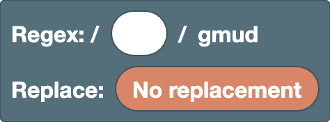

[ ]
Replacementinside the replacement
Root
The base block that holds the regex and the replacement. There is exactly one in the workspace.
Root (Regex / Replace)

The base block for building the regex and the replacement. It is always in the workspace and cannot be deleted.
- Regex slot: put the pattern here. It starts as a text field, so you can type a regex directly. Right-click → "Convert to blocks" turns what you typed into blocks.
- Replace slot: while it is "No replacement", the matched parts are highlighted in the result. Connect replacement blocks to show the replaced result instead.
The flags are fixed to gmud.
g(global): finds every match, not just the first onem(multiline):^and$match at the start and end of each line, not only of the whole textu(unicode): treats emoji and similar characters as one character, and enables\p{...}d(hasIndices): also records where each group matched (this does not change the result display)
Examples
- Regex
5, replace6→1525becomes1626(every match is replaced)
Position
Blocks that match a position rather than a character. They match zero characters, and are combined with other blocks to say where a match should happen.
Start of line (^)

The position at the start of a line. It matches no characters, only a position.
Because this editor uses the m flag, it matches at the start of every line, not only at the start of the whole text.
Examples
^a→aaa(only the first a)
End of line ($)

The position at the end of a line. It matches no characters, only a position.
Because this editor uses the m flag, it matches at the end of every line, not only at the end of the whole text.
Examples
a$→aaa(only the last a)
Word boundary (\b / \B)

The position at the edge of a word.
Choose the kind from the dropdown.
\b: a word boundary, between a\wcharacter (a letter, digit, or_) and any other character (or the edge of the text)\B: a position that is not a word boundary
Examples
\bcat\b→cat concat(only cat as a whole word)
Note
\w only covers ASCII letters, digits, and _, so accented letters like é and non-Latin scripts are not word characters.
In such text, boundaries may not be where you expect (for example, \b falls inside café, right before the é).
Lookahead / lookbehind ((?=) / (?!) / (?<=) / (?<!))

Checks whether the inner pattern comes right after (or right before) the current position. It only describes a position, so the inner pattern is not part of the match.
- First dropdown: empty for lookahead (checks what comes after),
<for lookbehind (checks what comes before) - Second dropdown:
=for "is there",!for "is not there"
Examples
\d+(?=px)→100px and 200em(only numbers followed by px)(?<=\$)\d+→$30 and 30€(only numbers after $)
Characters
Blocks that decide which characters to match. The ones that also work inside a character class [ ] have the "Character class" tag.
Text (free input)

What you type becomes part of the regex (or the replacement) as is. You can type any number of characters.
Examples
cat→cats and dogs
Note
Characters such as . * + ? ( [ have special meanings in a regex.
To match the character itself, escape it like \., or use the escaped character block.
Any character (.)

Matches any single character except a line break.
Examples
a.c→abc a-c ac
Note
It cannot be used inside a character class ([.] means a literal dot).
Digit / word character (\d / \D / \w / \W)

Choose the kind from the dropdown.
\d: one digit ([0-9])\D: one character that is not a digit\w: one letter, digit, or_([A-Za-z0-9_])\W: one character that is not a letter, digit, or_
Examples
\d+→Price: 120 USD
Note
\d and \w only cover ASCII. Accented letters (é, ü), non-Latin scripts, and full-width digits (１２３) are not included.
For those, use Unicode properties.
Whitespace (\s / \S)

Choose the kind from the dropdown.
\s: one whitespace character (space, full-width space, tab, line break, etc.)\S: one character that is not whitespace
Examples
\S+→foo bar(the two words separated by a space)
Unicode property (\p{} / \P{})

Matches one character by its kind (its Unicode property).
- First dropdown:
pfor characters of that kind,Pfor characters not of that kind - Second dropdown: empty for a general category (letter, number, symbol, ...),
Script=for a writing system (Greek, Cyrillic, ...) - Text field: the name of the property
Commonly used names:
- General categories:
L(letter),N(number),P(punctuation),S(symbol) - Scripts:
Latin,Greek,Cyrillic,Han(Chinese characters)
Examples
\p{Script=Greek}+→alpha αβγ\p{L}+→café 123(unlike\w, this includes accented letters)
Note
Characters shared by many scripts, such as digits, spaces, and most punctuation, belong to Script=Common, not to a specific script.
To include them, add them to a character class, like [\p{Script=Greek}\d].
External links
-
Unicode character class escape (MDN):
explains how to write
\p{}and the kinds of properties you can use (general categories,Script=scripts, and properties such asEmoji)
Tab (\t)

One tab character. In the replacement, it inserts a tab.
Examples
- Regex
,, replace\t→a,bbecomesa⇥b(tab-separated)
Line break (\n)

One line break character. In the replacement, it inserts a line break.
Examples
- Regex
,, replace,\n→a,bbecomesa,⏎b(a line break after each comma)
Escaped character (\/ \. \( etc.)

Treats a character that has a special meaning in a regex as the character itself. Choose the character from the dropdown.
-
Pattern and character class:
/ \ ^ $ ( ) . ? [ ] * { } | +can be used.-can only be used inside a character class (to tell it apart from a range likea-z). -
Replacement: everything except
$can be used (it becomes the character itself, without the\). To insert$, use the$$block.
Examples
1\.5→1.5 105(matches a literal dot)
Character class ([ ] / [^ ])
![[ ] block](../images/blocks/common/char_class.png)
Matches one character based on what you put inside. Use the gear icon to change the number of slots.
Choose the kind from the dropdown.
- Empty (
[ ]): any one of the characters inside ^([^ ]): one character that is not any of the characters inside
You can put text, \d \w, \s, \p{}, tab, line break, escaped character, and range (a-z) blocks inside.
Right-click → "External Inputs" stacks the slots vertically, which is easier to read when the content gets long.
Examples
[aeiou]→hello[^0-9]+→12abc34
Range (a-z)

Matches one character whose character code lies between the two characters. Enter one character (or one escape such as \-) in each field.
Examples
[a-f]+→xcafey[α-ω]+→αβγABC(lowercase Greek letters)
Note
Ranges follow the order of character codes. [A-z] also includes the six characters [ \ ] ^ _ ` that come between Z and a.
For letters only, put two ranges, A-Z and a-z, to make [A-Za-z].
Join / Choice
Blocks that combine several blocks. Join puts them in order from left to right, and choice matches any one of them. Use the gear icon to change the number of slots.
Join

Puts what you put inside in order from left to right. Use the gear icon to change the number of slots.
Right-click → "External Inputs" stacks the slots vertically, which is easier to read when the content gets long.
Examples
- Join
^,\d+, and$→^\d+$(lines that contain only digits)
Choice (|)

Matches any one of what you put inside. The options are tried from left to right, and the first one that matches is used. Use the gear icon to change the number of slots.
Right-click → "External Inputs" stacks the slots vertically, which is easier to read when the content gets long.
Examples
cat|dog→a cat and a dog
Note
| splits everything before and after it, so wrap it in (?:) when joining it with other blocks.
For example, joining "a|b" and then "c" gives a|bc, which means "a" or "bc".
For "a or b, then c", use (?:a|b)c.
Grouping
Blocks that group a pattern, or record (capture) the matched part to use it later. Captured parts can be used in backreferences and in the replacement.
Non-capturing group ((?:))

Groups the inner pattern into one unit. It does not get a number for backreferences or the replacement.
Blocks are not grouped automatically, so use this to set the range of a repetition or a choice (|).
Examples
(?:ab)+→abababc(repeats ab as a unit)
Capturing group (( ))

Groups the inner pattern into one unit and records (captures) the matched part.
The captured part can be used in backreferences and in the replacement as $1.
Groups are numbered 1, 2, 3, ... from left to right (in the order their ( appears). Named groups are counted too.
Examples
- Regex
(\d+)-(\d+), replace$2-$1→12-34becomes34-12
Named group ((?<name>))

A capturing group with a name. The captured part can be used in named backreferences and in the replacement as $<name>.
Create a name with "Create group name…" in the dropdown. Names must start with a letter and can only contain letters, digits, and _.
Examples
- Regex
(?<year>\d{4})-\d{2}, replace$<year>→2025-08becomes2025
Backreference (\1)

Matches the same text that the numbered group captured. Choose the group number from the dropdown.
Examples
(\w)\1→book(the same character twice in a row)
Note
Named groups are counted in the numbers too. Also, the numbers in the dropdown come from the number of group blocks in the workspace. Groups typed as text in the regex slot are not counted.
Named backreference (\k<name>)

Matches the same text that the named group captured. Choose the group name from the dropdown.
Examples
(?<q>["'])\w+\k<q>→"abc" 'def"(text wrapped in the same kind of quote)
Repetition
Repetition blocks only repeat the single item right before them.
If you put several characters inside, only the last character is repeated (abc+ repeats only c).
To repeat them together, use (?:).
Note
Putting a repetition inside another repetition (nesting them) can make matching extremely slow.
For example, using (?:a+)+$ on text that fails at the end, like aaaaaaaaaaaaaaaaaaaaaaaaaaaaab, makes the number of combinations to try grow exponentially with the length, and the browser may freeze.
(?:a+)+ means the same as a+, so avoid nesting when you can.
Zero or one (?)

Matches the inner pattern once if it is there, or zero times if it is not (it is optional).
Choose the kind from the dropdown.
- Empty (
?): prefers matching once ?(??): prefers matching zero times
Examples
colou?r→color colour- Regex
(\d)?(\d+), replace[$1][$2]→123becomes[1][23] -
Regex
(\d)??(\d+), replace[$1][$2]→123becomes[][123](with??, the first group takes nothing if it can, so all the digits go to the second group.??only makes a difference when the part after it can also take the same characters)
Zero or more / one or more (* / +)

Repeats the inner pattern.
- First dropdown:
*for zero or more times,+for one or more times, as many as possible - Second dropdown: choose
?to repeat as few times as possible (*?+?)
Examples
a+→caaat-
Regex
<.+?>, empty replacement →<p><b>1</b> + <i>2</i> = 3</p>becomes1 + 2 = 3(removes only the tags) -
Without
?,<.+>matches everything from the first<to the last>as one match, so everything is removed
Try adding and removing the ? in the "HTML" sample to see the difference.
Exactly N times ({N})

Repeats the inner pattern exactly N times.
Examples
\d{3}→1234567
N or more times ({N,})

Repeats the inner pattern N or more times.
Choose the kind from the dropdown.
- Empty (
{N,}): repeats as many times as possible ?({N,}?): repeats as few times as possible
Examples
\d{2,}→1 22 333
N to M times ({N,M})

Repeats the inner pattern at least N and at most M times. M cannot be smaller than N.
Choose the kind from the dropdown.
- Empty (
{N,M}): repeats as many times as possible ?({N,M}?): repeats as few times as possible
Examples
\d{2,3}→12345
Substitution
Connect substitution blocks to the replace slot of the root. In the replacement, you can also use text, tab, line break, and escaped character blocks.
Replacement join

Puts what you put inside in order from left to right within the replacement. Use the gear icon to change the number of slots.
Right-click → "External Inputs" stacks the slots vertically, which is easier to read when the content gets long.
Examples
- Join
[,$&, and]→ the replacement[$&]. With the regex\d+,a1becomesa[1]
Literal $ ($$)

Inserts a $ character into the replacement. Because $ has a special meaning in the replacement, a literal $ is written as $$.
Examples
- Regex
\d+, replace$$$&→100becomes$100
Matched text ($&)

Inserts the matched text itself.
Examples
- Regex
\d+, replace($&)→a1 b22becomesa(1) b(22)
Text before the match ($`)

Inserts all of the target text that comes before the match.
Examples
- Regex
=, replace=$`→a=becomesa=a
Text after the match ($')

Inserts all of the target text that comes after the match.
Examples
- Regex
=, replace$'=→=bbecomesb=b
Group reference ($1)

Inserts the text that the numbered group captured. Choose the group number from the dropdown.
Examples
- Regex
(\d+)-(\d+), replace$2-$1→12-34becomes34-12
Note
Named groups are counted in the numbers too. Also, the numbers in the dropdown come from the number of group blocks in the workspace. Groups typed as text in the regex slot are not counted.
Named group reference ($<name>)

Inserts the text that the named group captured. Choose the group name from the dropdown.
Examples
- Regex
(?<year>\d{4})-\d{2}, replace$<year>→2025-08becomes2025